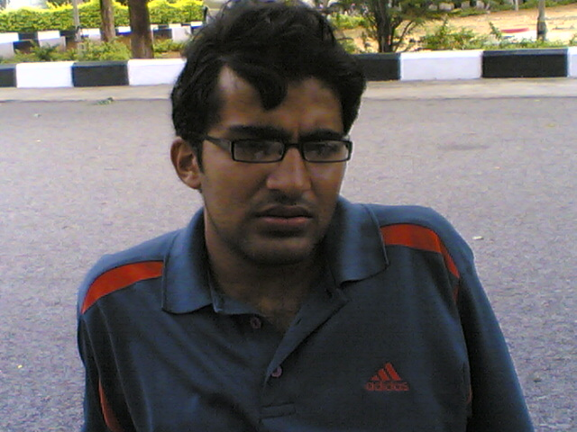
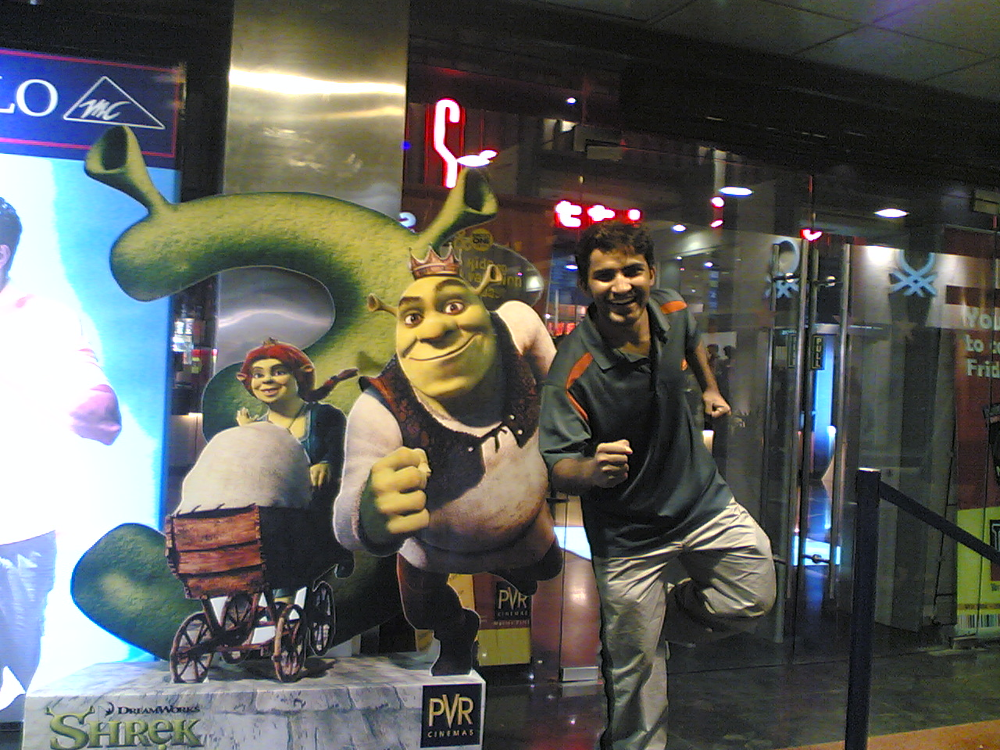

The Yearbook - Commemorating 2005-09!
Pankaj Anthwal's profile information
Name - Pankaj AnthwalBirthday - 14th February, 1985
Email - pankaj.anthwal@gmail.com
Address - 32, Patel Road, Dehradun
Phone - 09949018576
Webpage - Link
Testimonials written by Pankaj Anthwal
Pankaj Anthwal's Album

Yet yanother Me
.jpg)
Yet yanother Me

Me
Testimonials
Abhinav Parashar wrote-So finally I come to the testi of My dear friend Panthwal
 . It's the last day of yearbook and I was avoiding his till now ... because he understands the value of these testimonials and I knew that I'll have to think a lot while writing his testi . Par aaj last din hai...ab to likhni he padegi . Bhai time kam hai ... maaf kar dio jaisi bhi likh pau
. It's the last day of yearbook and I was avoiding his till now ... because he understands the value of these testimonials and I knew that I'll have to think a lot while writing his testi . Par aaj last din hai...ab to likhni he padegi . Bhai time kam hai ... maaf kar dio jaisi bhi likh pau 
His 1st yr performances on stage r still fresh in my mind. One of the most talented person of our
batch. Padhai ho ya cultural he has proven himself
 . Some time very philosophical n some time very friendly. He is unique in his own way. Kuch bhi ho jaye par cheeje sari branded leta hai. I always tried to encourage him for his performances because I always felt that he deserves. He is pro of mimicry ...good in singing, dancing, cricket, sketching...Or kya bachhe ki jaan loge
. Some time very philosophical n some time very friendly. He is unique in his own way. Kuch bhi ho jaye par cheeje sari branded leta hai. I always tried to encourage him for his performances because I always felt that he deserves. He is pro of mimicry ...good in singing, dancing, cricket, sketching...Or kya bachhe ki jaan loge 
Cricketer banne ka sapna tha bhai ka bachpan se
. Bahut balling karayi hai mujhse isne . He loves to think, understand the reason behind everything. Very responsible about humans but very careless about other things .
He never disappointed me whenever I asked him for a tea .... unless he is very busy.

You know it well more than anyone....I know its difficult now for you ...but give some 'time' for urself too....without thinking about anything. You'll feel good.
Bhai there r a few people also who feel good ...when u r on stage. So many memories I have in my mind ....likhna start karunga to khtm nahi hongi .... testi ke size se feelings ka andaza mat lagana dost ....
Wish u a bright future. May god bless u
 . Wish ki bache hue baal shadi ke baad jhade . Keep in touch. Or shadi me jarur bulaio .
. Wish ki bache hue baal shadi ke baad jhade . Keep in touch. Or shadi me jarur bulaio .
Abhishek Sainani wrote-
why so serious? @ the pic.
Abhishek Sainani wrote-
He was one of the few guys who showed his concern over my gloomy expression in first semester. He used to give me advice and suggestions!
Pankaj is one of the multi-talented guys of our batch. He plays sports and acts on stage with equal ease. He's a pro at mimicking anyone he meets a few times or observes for a few times. He's a great thinker and we have talked a lot about life in general a lot !!
He used to come from NBH and we used to sit on the steps of GHEB and chat at night.
I sometimes wonder why he doesn't participate much in events...
He is quite impulsive and loves to get into discussions/arguments, once I got into a long discussion with him but we did manage to find a common ground in the end!
(which is to say I came out of the discussion safely! )
All the best for future, I'm sure it'd be much better, although not the same as these college days!
Randeep Singh Banga wrote-
very joyful, witty person...has loads of talent...i remember a quote from Guru Granth Sahib..'Bande Khoj Dil Har Roj, Aur Phir Pareshaani Nahe'...i believe u will attain d same state no pareshaani for u do stop in d race of life and think...have faith in God and keep going...u rock man
Vivek Prakash wrote-
Pankaj ( aka The Jeevan Vidya Guy or Mimicry Pankaj as named by govindrajulu sir ) ... one of my closest friends ... has been with me almost all the time since the last 2-3 years ... is a great all rounder ... whatever be the field, be has to go to the depth of it ... an excellect friend ... you can always find him whenever you need him ...
An excellent play writer ... can always come up with an outstanding play that everyone can enjoy and that too has some serious meaning to it ...
Throught my 3rd and 4th year he has been with me and has supported me in my tough times ... thanks a lot for that ... when almost everyone misunderstood me, one of those few who trusted me ...
I still remember all those nights when we travelled together ... singing aloud through the streets of Delhi ...
Will miss all the time we spent together and just hope that this never ends ...
... you will always be one of my best friends ... Karan wrote-
Anthwal and I have never been the best of friends nor will we ever be. I never liked the way he handled all of the ragging cases. He probably doesn't like any of the netagiri I do. But I genuinely admire him for a few things. One, he has principles in life and acts in accordance to them. Two, he is your most talented chap in every sphere, to me, he is the real Mr.Felicity '06. And three, I like his cricket and really enjoyed all the support he extended to me.
May God bless!
Peace.
Atul Dwivedi wrote-
Pankaj Bhai ...... This person .....Wao ...what to say .... A multi talented personality ...... A gr8 singer ..I still remember those days when We performed during Dr. Kalam visit ...
Banda heera hai heera .... kya mimic karta hai bhai ... very good actor hai ..... !!
Painting ans Schecking awesome hai bande ki ..akhir hum bhi kisi se kam nahi dude ..udo mat
Ye hamesha mujhe road par mil jata hai ...pata nahi room par kab rahta hai .....
Ye thoda Philosophical type ka hai .. itni philosophy acchi nahi hoti be ... waise to bahut cool banda hai..lekin bata nahi isko kya chull hoti rahti hai ...hamesha kuch na kuch tension leta rahta hai bina matlab ka wo bhi ... !!
Mai bataun ..to is bande ke liye ..bahut respect hai mere dil mein ...and banda mast hai ..apan ek doosre mein comments jaroor marte hai jab bhi milte hai ... "Aur dude ..karke start karte hai baat
" ...
Banda padhai mein bhi mast hai ... dedicated hai MS ke liye .... intelligent banda hai ...... !!
Mujhe kabhi bhi pahle koi prob huaa karati thi ..to mai isse hi discuss karta tha ....lekin ab prob hoti hi nahi ...
Ab kya likhun be .... !!
Singer, Mimic , Painter, innovative mind hai ..... bond hai ....... bandiyo ke sath ghoomta hai har time .... !!
Bas yahi hai ..jaldi se MS khatam kar .. nahi to sadta rahega yahi ...... !!
Baaki nahi likhaa jaa raha hai ...milega to tujhe bol dunga..kya likhna tha ...
Hope you do gr8 in future
Vipul Mittal wrote-
Pankaj is by far the most talented person in the college. When he performs an act, you are forced to leave whatever you are doing and just sit and watch him. Its always been a splendid performance whenevr he has performed. He is among those few guyz who were influenced by Jeevan Vidya and I feel he has defined his priorities well.
It was his sheer talent due to which he made it to the finals of Mr. Felicity but lost due to some reason
. It seems that his priorities have always kept him away from the many of us. But its good to see that he is happy with what he is doing and that is what matters the most. He always greets you whenever you pass him and bears a smile for most of the time.
Good luck for your MS. God bless you
Prashasti Gupta wrote-
This guy is truly an all rounder
...gana,bajana,nachna,khelna ,koodnaho ya padhna ...he is good at everything ...I love his mimicry ..when he is on stage ..he entertains everyone ...well he calls me with different names ..Prafufti...But is always found with a smile
All the Best
Keep Rocking
Sanket Sharma wrote-
Kya time tha dost, wo first year ki yaadein.. Munna bhai in IIIT.. Got lot of appreciation for that. You are really talented. Man with skills of mimcry, mono acting, singing, dance like hrithik, sense of humour and what not.
I was highly impressed by you in first year ofcourse aaj bhi hun par tab ki baat alag thi. You were at your best in stage shows.
I remember in the beginning of the second year you, me, bhartiya, mehta, parminder used to sit and chat long hours on the issue of ragging. Everytime I used to think ki shayad I have made some sense to you last night but agle din se fir wahi. But I liked your never-say-die spirit. You fought hard for the social cause.
Aaj bhi tujhe kahin road pe chalta dekhta hun to fir se sab taza ho jata hai. Dil karta hai ki kabhi fir se wo samay laut aaye. I still feel it was unfortunate that you could not win Mr. Felicity, which you actually deserve.
there is lot more to write for you but the time never allows me. just 2 hours to go for the deadline
 . Aur abhi lambi list padi hai likhne ko.. kabhi bhuliyo mat dost.. aur haan wo yaad rahega tera dehradun wala bartav ... I will pay you in the same coin.
. Aur abhi lambi list padi hai likhne ko.. kabhi bhuliyo mat dost.. aur haan wo yaad rahega tera dehradun wala bartav ... I will pay you in the same coin.Sunil Soni wrote-
Anthwal - First thought that comes to my mind when i hear is - "entertainment" n talent ... this guy has gotta lots n lots of talent ... his mimicry is d best ..... i still remember his mimicry when he performed on Mr.Felicity'06 n '07 ..... wow !!!
First time i met this guy during Mr.Freshers'05 .... he wrote a wonderful play for our(Prithvi) house which was super-duper hit .... gotta lot of creativity ... especially with skits n mimicries .... wish u all d very best buddy
keep rocking always dude ..
Srirang Ranjalkar wrote-
Pankaj ... iske baare me kya likhun .. multi talented banda hai .. I mean ye aise aison ki mimicry kar sakta hai jo ki koi kabhi soch bhi nahi sakta
. khade khade meri hi mimicry kar ke dikha sakta hai . Profs ki to sabse awesome karta hain  buddy
buddy
Gaata bhi bahut acha hai. Hamesha tough songs select karta hai but bahut hi dedication ke saath perform karta hai. btw batadoon ki ye agar stage chad chaye to bade badon ki watt lag jaye.
Iski acting bhi awesome hai. Pichle do saalon se DumbC ka winner raha hai. banda kisi bhi type ki movie apni acting se guess karwa sakta hai. And ya! How can I forget about Munna bhai!
That was awesome buddy!!
Jo isne first year Felicity me kiya tha wo unforgettable hai.
Bhai .. tu maane ya na maane humare liye to Mr. Felicity tu hi hai. Aaj bhi
Padhta bhi awesome hai.
 . Bahut dedicated hai. Especially house matters me.
. Bahut dedicated hai. Especially house matters me.
but in sab ke beech kahin se dooriyan si aa gayi ... humare hostel badal gaye, mess badal gayi, courses alag alag liye, interaction kam hota gaya but dil me jo respect tha who kabhi kam nahi hua.
 .
.
So here goes a testimonial for the most inteliigent and multi talented guy of our batch.
Aise hi gaate hue gungunaate rehna Pankaj bhai. Humein kabhi na bhulana.
.
Srirang.
Bhanukiran Vinzamuri wrote-
Hmm Pankaj is a person who is very difficult to describe. The person to be blamed here is none other than God himself for making such a unique cocktail of unprecedented talents. He is definitely a man of the fine arts. His bold strokes fill those caricatures with life. He is a very good singer also. He has a very unique stage presence which is full of enigma,style and defiance. His performance in fel 2k6 deserved more than accolades or prizes. But i must admit that he has gone into a shell over the past 2 years which is not good.
The only advice i can give you is that you are like an eclipsed sun currently. Use some of your theatrical energy in real life to build broader networks. Vibrate your inner molecules of passion consistently as you must know this Its not that your chasing the limelight, its the limelight which actually needs and deserves a person like you
Tavva Rajesh wrote-
extreeeeeeeeeeeeeeeemely talented.
singer, actor and above all, an unbelievable mimicry artist
Harsh wrote-
Anthu has a lot of enthu !!
Were really good friends at some point of time but our interactions very limited lately not because of any animosity or anything just because our groups and activities were quite different.
He is a very very good listener and guide. Those who are very close to him respect him a lot. Very understanding and has a very matured take on things.
Is a wonderful artist and marvelous in mimic-ing anyone. Good sense of humor and a great performer.
Wish you best of luck for the future dude.

.jpg){kind=link}
.jpg){kind=link}